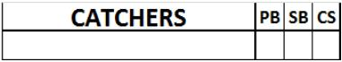
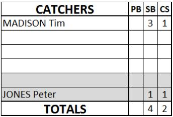

Catching performance .
To the right of the pitching table there is a section for catchers.
GEN E RAL NOTES: the numbers corresponding to the statistics given below are noted on the line next to the name of the catcher in question.
|  |
The CATCHERS column contains the names of t he catchers in full: first their surname in block capitals and then their first name in small letters. The first line is for the starting catcher and the following lines are for substitutes. |
The last line of the column contains the totals of each individual column, even in the event that there is just one catcher, or the play is credited to the pitcher.
| PB |
Number of Passed Balls |
||
| SB |
Number of Stolen Bases allowed |
||
| CS |
Number of runners Caught Stealing
|
||
|  |
Not all Stolen Bases or Caught Stealing are to be credited to the catcher. In case one of these should be credited to the pitcher, we write the pitchers name on line 5-6 of this catchers section and mention the number of SB or CS. |
||